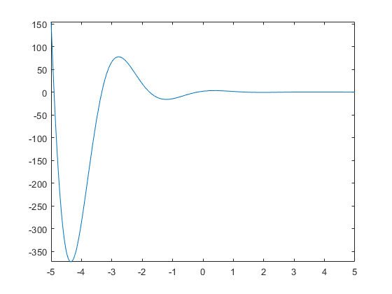
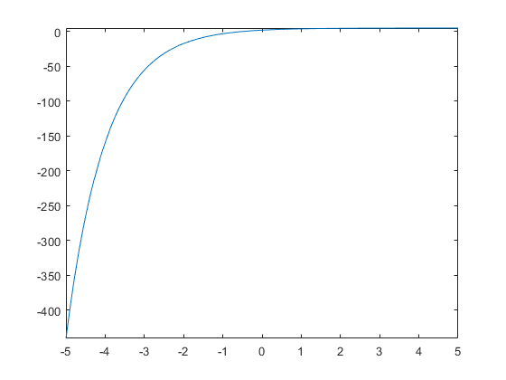
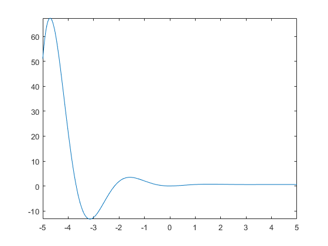
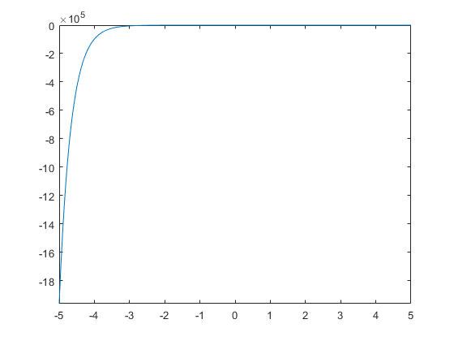
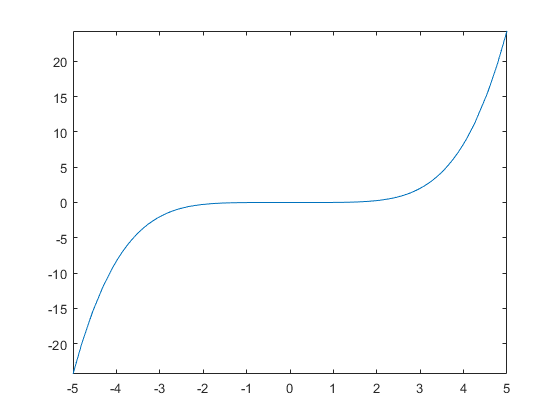

Questoes da lista 1 Modelagem de Sistemas
Contents
Questao 1
clc;
clear;
close all;
num = [2 12];
den = [1 2 5];
numsym = poly2sym(num);
densym = poly2sym(den);
F = numsym/densym;
resp = ilaplace(F);
pretty(resp)
fplot(resp)
/ sin(2 t) 5 \
exp(-t) | cos(2 t) + ---------- | 2
\ 2 /
 Questao 2
clc;
clear;
close all;
num = [1 2 3 4 5];
den = [1 1 0];
numsym = poly2sym(num);
densym = poly2sym(den);
F = numsym/densym;
resp = ilaplace(F);
pretty(resp)
fplot(resp)
2 dirac(t) - 3 exp(-t) + dirac'(t) + dirac''(t) + 5
Questao 3
Feita no papel
Questao 4
clc;
clear;
close all;
num = poly2sym(3);
den = poly2sym([1 2 5 0]);
f = num/den;
resp = ilaplace(f);
pretty(resp)
fplot(resp)
/ sin(2 t) \
exp(-t) | cos(2 t) + -------- | 3
3 \ 2 /
- - ---------------------------------
5 5
 Questao 5
clc;
clear;
close all;
num = poly2sym([6 21]);
den = poly2sym([2 7 3]);
f = num/den;
resp = ilaplace(f);
pretty(resp)
fplot(resp)
/ t \
exp| - - | 18
\ 2 / exp(-3 t) 3
------------- - -----------
5 5
 Questao 6
Feita no papel
Questao 7
clc; clear; close all; syms s t a b e w num = a*s^2+s*(2*e*w*a-b)-w^2; den = s^3 + 2*e*w*s^2; f = num/den; resp = ilaplace(f, s, t); pretty(resp)
2
a w e 4 - 2 b e + w t w exp(-2 e t w) (w - 2 b e)
-------------------- - --- - -------------------------
2 2 e 2
4 e w 4 e w
Questao 8
clc; clear; close all; syms s a A w; num = A*w; den = s^3+ w^2*s+a*s^2+a*w^2; f = num/den; resp = ilaplace(f); pretty(resp)
A a sin(t w) - A w cos(t w) A w exp(-a t)
--------------------------- + -------------
2 2 2 2
a + w a + w
Questao 9
clc; clear; close all; syms s t; num = 3; den = s^2 +3*s^ + 6; f = num/den; resp = ilaplace(f); pretty(resp) fplot(resp)
3/4 3/4
3 sqrt(6) sin(#1) cosh(#1) 3 sqrt(6) sinh(#1) cos(#1)
3 t - ----------------------------- - -----------------------------
2 2
where
1/4
3 sqrt(6) t
#1 == --------------
6
